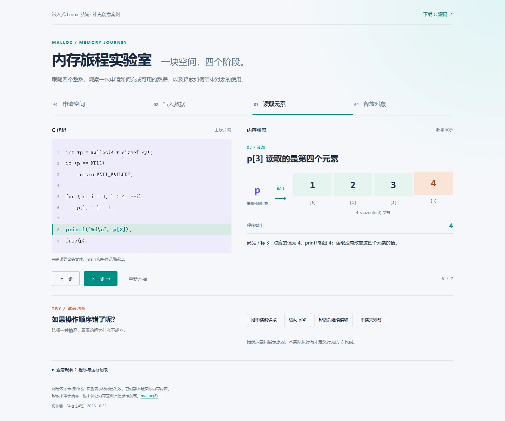

MALLOC / MEMORY JOURNEY
malloc 函数的前世今生一块内存的旅程
课件系统介绍背景、机制与用法；这里提供配套原理动画和交互案例，帮助观察一次内存申请的完整过程。

C 源码与动画工程
交互页面使用教学模型。配套 C 程序实际调用 malloc 和 free，并输出 JSON 事件；视频独立讲解函数原理。
图形均为概念示意，不代表真实地址、glibc 内部布局或性能测量。
MALLOC / MEMORY JOURNEY
课件系统介绍背景、机制与用法；这里提供配套原理动画和交互案例，帮助观察一次内存申请的完整过程。

交互页面使用教学模型。配套 C 程序实际调用 malloc 和 free，并输出 JSON 事件；视频独立讲解函数原理。
图形均为概念示意，不代表真实地址、glibc 内部布局或性能测量。